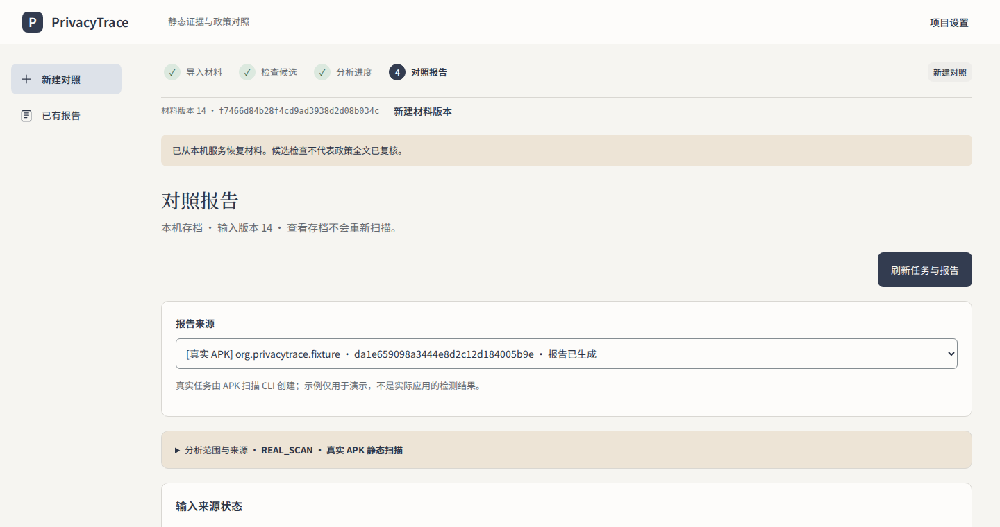
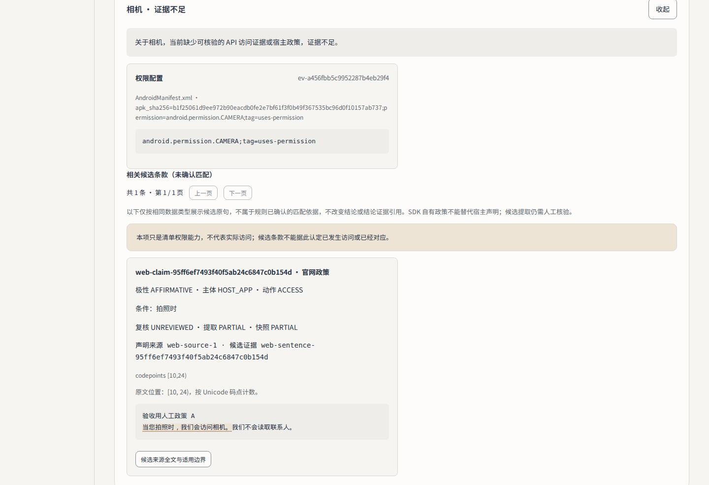
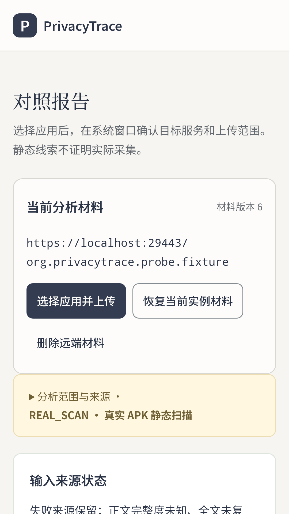

2026 年第十四届全国大学生数字媒体科技作品及创意竞赛 · 自主选题类 · 移动与网络应用开发类
移动应用静态隐私证据与政策声明对照
每条静态线索追到代码位置，每句政策原句切回原文。PrivacyTrace 不判断合规与安全，也不判断应用是否实际采集了数据。
作品汇报 · 评审匿名版（不含校名、成员姓名与账号） · 2026-10-23 · v0.1
数字截至 2026-10-23。前端迁移和验收还在进行，界面截图与状态以随包最新记录为准。
Outline
工程测试通过、受控评测完成、真实 App 评测是三件事。本稿分开写，没做的不写成没通过。
Section one
定位、用户、三条不做的事
§1 · 定位
普通 Android 用户。不用会读代码，也不用懂法务文本。报告给出线索位置和政策原句，读者可以自己复核。
定位、标识、联系人、相机、麦克风、文件与媒体（含截屏）。APK 支持单包，也支持 base + 全部 splits。
形态：Android 客户端、Web 工作台、隔离扫描 API、离线只读回放。分析只在本机或受控内网运行，没有公网实例。
§1 · 可复核性
Figure 1：报告分三层，两次点击完成下钻。读者可以自己走一遍，自己验算。
Section two
双向证据链 · 克制判定 · 评测协议 · 隔离回放
§2 · 创新一
Figure 2：代码侧与政策侧各自独立取证，在 PrivacyIssue 汇合；任何一侧缺失，结论只能是「证据不足」。
真实样本：GKD v1.12.1（2026-10-09 记录）
§2 · 创新二
| 层级 | 我们写下 | 我们不会写 |
|---|---|---|
| 权限 | 能力声明 CAPABILITY_ONLY：「申请了读取相册的能力」 | 「偷看了相册」 |
| 调用 | 静态线索 STATIC_POTENTIAL：「出现一处相关调用线索」 | 「已采集 / 已上传」 |
| 政策 | 声明状态（UNREVIEWED / PARTIAL）与原文区间 | 「政策合规」 |
| 对照 | 六类状态之一；证据不够就是 INSUFFICIENT_EVIDENCE | 「违法 / 不安全」 |
| 未知 | 保留 UNKNOWN：目的、接收方、跨境、期限 | 推测出一个答案 |
「未命中规则不代表没有隐私行为。」（项目能力边界）
六类状态只对照「数据类型是否被声明」。「具体类型已声明」不代表目的、接收方、传输或时间范围一致，更不是合法性判断。
§2 · 创新三
Figure 3：评测协议。真值和输入先冻结，三种方案跑同一份材料。PrivacyTrace 用既有规则引擎，不按结果调参。
§2 · 创新四
扫描退出后清理运行目录，并用 docker inspect 复核容器参数；宿主机只负责调用，不在宿主机解析未知 APK。
回放不重扫：打开包只还原已保存的报告与证据，不调用分析链路。
隔离参数是执行约束，不是安全认证。回放包只做内部限定验收，不含公开分发授权。两项都不能替代真实应用评测。
§3 · 工作流
四种证据，分开存放
| 层级 | 能证明 | 不能证明 |
|---|---|---|
| 工程测试 | 代码按预期运行 | APK 分析有效性 |
| 受控评测 | 自建场景下的名义对齐 | 真实 App 表现 |
| 真实样本 | 个案链路跑通 | 全局精度 / 召回 |
| 正式提交 | 系统受理 | 工程验收 |
这张表管住每个数字的措辞：测试通过不写成评测通过，上传成功不写成提交成功。
六步的状态都以页面文字呈现；颜色只是冗余编码，不从颜色推断结论。
§3 · 工程管理
| 机制 | 做法 | 结果（2026-10-23 快照） |
|---|---|---|
| 交付治理 | TheMasterplan v5.0.0 固定 SHA；Issue / 子票 / PR；单一交付责任人；子票未完成不在父票勾完成。 | 采纳记录和 PR 历史可查。 |
| 唯一验证入口 | scripts/check.sh 与 CI 同名工作流；Python / Web 测试、Ruff、契约导出、构建一次跑完。 | 后端 1640 passed / 179 skipped；Web 65 passed；Ruff、契约、构建通过。 |
| 证据绑定 | 真值先行冻结；输入锁；交付 SHA；离线包 SHA-256；引用数字必须带时点与版本。 | 复查时回到同一版材料，不用追最新 main。 |
| 验收矩阵 | H（成功组合）/ N（负向）/ F（故障恢复）三类用例；另有 8 项匿名化自查门禁。 | H01–H11 通过；H12 失败并如实记录（见成果页）。 |
| 材料创作 | 截图取自真实运行；影片取真实操作 + 分镜 + 原创配乐；数字全部可复算，缺口直接写在材料里。 | 没有概念图，没有虚构比例，规划不写成已达成。 |
CI 数字来自 2026-10-22 的 Check 运行（e52cc71）；跳过项包含需真实 Docker / PostgreSQL / Redis 与受控构建显式开启的用例，不计入通过数。
§4 · 成果
Figure 4：三方案在同一份材料上的状态一致数（36 行）。蓝色是 PrivacyTrace，灰色是对照方案。
| 口径 | 数值 / 说明 |
|---|---|
| 场景 | 12 个（C01–C12） |
| 对照 | 3 方案 × 12 场景 = 36 行 |
| 状态一致 | 本系统 12/12；API+扁平 4/12；权限+关键词 2/12 |
| 失败 / 弃判 | 如实保留在全分母 |
| P / R / F1 | N/A（无二元采集真值） |
不能从这张表推出：真实 App 的检测准确率、实际采集或传输行为、合法性结论、商业应用泛化性能。
原六场景评测（2026-10-12）为 2/6、3/6、6/6，保留原时点和原 SHA。本页引用十二场景扩展版。
§4 · 成果与反证
样本小、非随机、顺序不平衡；是探索性记录，不作产品效果结论。
H01–H11 PASSED H12 FAILED
H12 需要独立补跑窗口。真实 App 全局精度与召回没做，动态分析暂缓。没通过的不写成通过。
§4 · 真实运行界面

Figure 5：报告页。报告的来源、输入来源状态和核验范围放在同一屏。失败来源保留，政策状态用文字写明：未复核、部分提取、附件未检查。
截图取自 2026-10-22 候选包的真实运行。前端视觉基线还在迁移，最终界面可能不同。
§4 · 证据下钻与移动端

Figure 6：「相机 · 证据不足」证据卡。权限配置只证明能力声明；候选条款标 UNREVIEWED 或 PARTIAL；原句位置 [10, 24)，按 Unicode 码点计数。

Figure 7：Android 客户端读取同一任务和报告；标题下固定写着「静态线索不证明实际采集」。
移动端主流程已合入。删除入口在「服务与存储设置」sheet，报告和证据面板复用 Web 端契约。
§5 · 原创贡献与披露
Gemini：文档起草与修订；Codex：实现与验证；DeepSeek Harness：材料与分镜；Claude / WorkBuddy：文案与材料整理。
AI 不参与最终事实裁决。生成内容先过机器校验，再人工审阅。不给出没有复算的比例；参赛材料逐项披露。
Vue 3 / Vite（MIT）、FastAPI / Pydantic（MIT）、Uvicorn（BSD-3）、Androguard 4.1.3（Apache-2.0）。
项目源码许可还没定。参赛材料不写「100% 独立完成」，也不把 AI 参与写成零。
成员 A/B/C 为匿名评审表述。真实分工、AI 工具型号和人工修改范围见申报材料与随包披露文档。
结论 · 证据索引
对照工具，不是合规判决器。三条「不做」写在产品里，也写在这份材料里。
双向证据链、克制判定、可复现评测、隔离回放；四项都有文件、参数与数字可查。
H12 未通过，前端在迁移，真实 App 评测没做。三项都留在这里，没有写成完成。
汇报稿 v0.1 · 2026-10-23。数字、截图和状态随合入更新，以随包证据与验收记录为准。